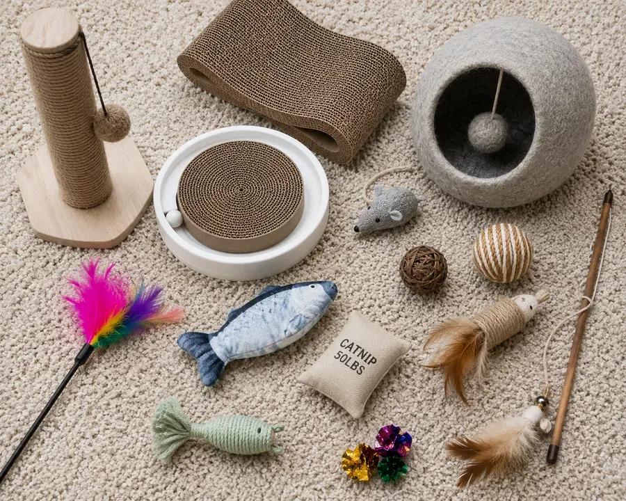
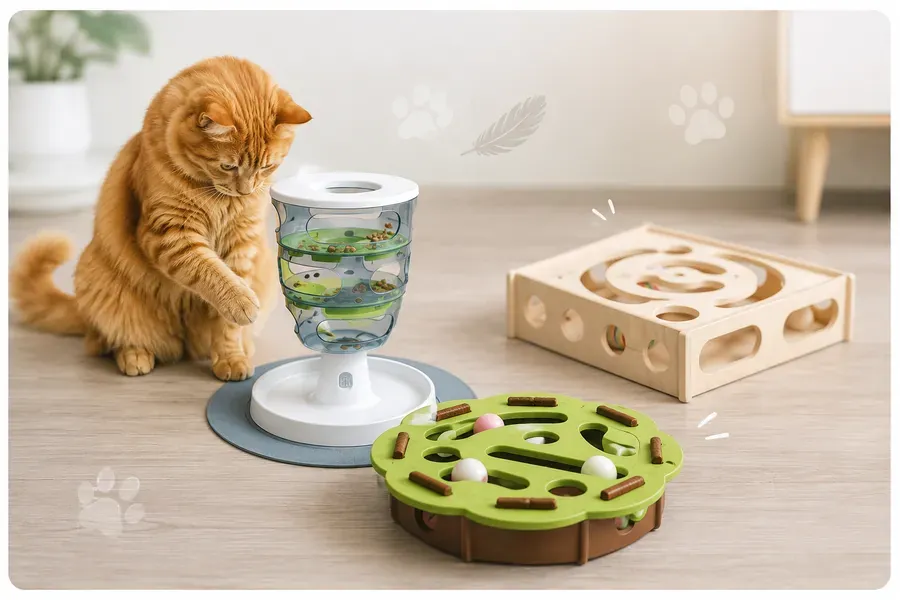

Игры
Для домашней кошки игра — это не просто развлечение, а реализация охотничьего инстинкта. Ежедневные сессии по 15–30 минут помогают предотвратить стресс, ожирение и деструктивное поведение.
1Безопасность прежде всего: выбор материалов
Осторожно
Материал важен для игрушек. Кошки играют лапками, но и берут игрушки в пасть.
Натуральные материалы: шерсть, перья, хлопок и лён, джут и сизаль, древесина.
Синтетические материалы: флис, пищевой силикон, качественный ABS-пластик.
Избегайте дешёвого пластика с резким запахом (быстро ломается, острые края, токсично пахнет), длинного ворса и люрекса (нити легко отрываются, при проглатывании вызывают непроходимость кишечника), поролона (кошка может разгрызть, мелкие куски застревают в желудке).
Мелкие детали: никаких бусин, приклеенных глаз или пуговиц — кошка может легко их откусить и проглотить, что приведёт к серьёзной травме ЖКТ.

2Общий список игрушек
Текстиль и шерсть:
- мягкая игрушка-пищалка из хлопка/льна;
- валяные шарики из 100% шерсти;
- тканевые мыши и рыбки без приклеенных деталей;
- мешочки с кошачьей мятой;
- игрушки-подушечки из плотного флиса.
Дерево и натуральные волокна:
- палочки мататаби для грызения;
- прессованные шарики из кошачьей мяты;
- деревянные развивающие коробки-лабиринты;
- мячи из сизалевого/джутового каната;
- когтеточки-столбики и коврики.
Силикон и резина:
- жевательные игрушки из пищевого силикона;
- массажные дентальные щётки-игрушки;
- зубные кольца из прочной резины.
Пластиковые интерактивные игрушки (строго ABS-пластик):
- многоуровневые трек-пирамиды с мячиками;
- интерактивные кормушки-головоломки;
- невыляшки-дозаторы для лакомств;
- закрытые пластиковые шары с бубенчиком.
Игрушки для совместной игры: удочки-дразнилки с флисовыми лентами или натуральными перьями; длинные текстильные шнуры-змейки.
3Саморазвлечение
Головоломки и кормушки-лабиринты займут кошку, когда вас нет дома. Лучшая мотивация — сухие любимые лакомства.
Примеры:
- пищевые головоломки (Puzzle Feeders) с крышками, которые кошка двигает лапой;
- Catit Senses Food Tree;
- Nina Ottosson Puzzle Toys разных уровней сложности;
- интерактивный шар с кормом (Treat Ball);
- нюхательный коврик (Snuffle Mat);
- коробка-головоломка (Peekaboo Box).

4Осторожно
Осторожно
Лазеры: могут вызывать фрустрацию, так как «добычу» нельзя поймать. Всегда завершайте игру реальной игрушкой, которую кошка может сжать лапками.
Ленты: никогда не оставляйте кошку с лентами или верёвками без присмотра — риск удушения или заглатывания нити. Лучше всего хранить их в закрытых коробках без доступа к кошке.
5Главное правило: контроль
Совет
Ни одна игрушка не является на 100% безопасной. Регулярно осматривайте арсенал вашей кошки на предмет износа, оторванных деталей или разрывов. Ваше внимание — лучший залог безопасности.
Ещё в разделе
Информация в приложении собрана из открытых источников и опыта владельцев кошек. Она не заменяет консультацию и осмотр у ветеринара. Решения о здоровье и уходе за питомцем принимает владелец — при любых сомнениях обратитесь к ветеринару.
Всё это есть в приложении Cat First
Статьи, чек-листы и первая помощь — в телефоне, даже без интернета.